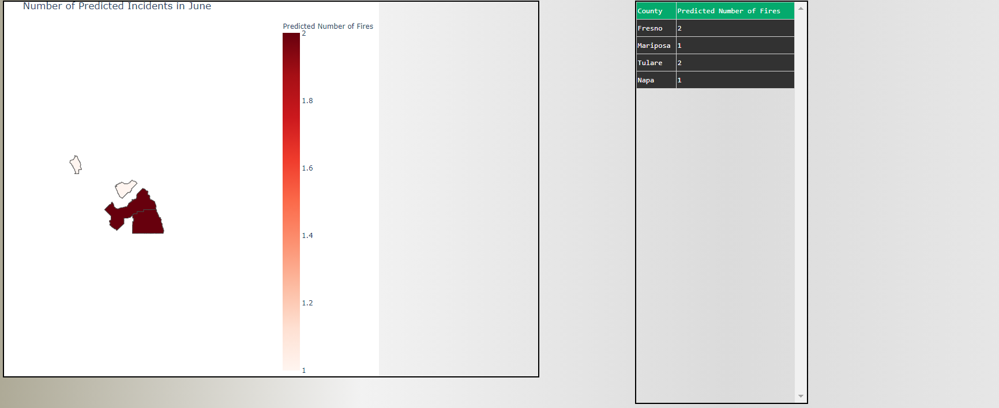
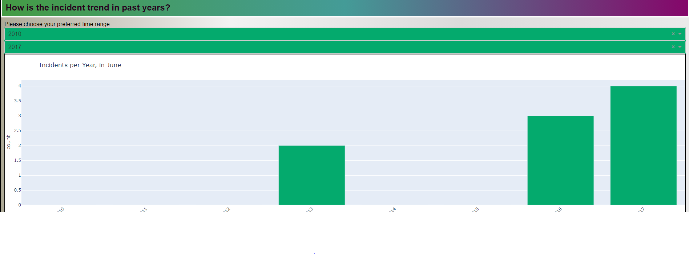

County Based Predictions¶
To better understand the underlying function calls for the prediction of fires based on user input county’s and date, let us look at an example first.
Example¶
Suppose you want to predict the chances of fire for 4 different county’s - Napa , Fresno , Mariposa , Tulare for the month of June then this is the result. 
{kind=link}
Similarly, we can also have a look at the past trends for a particular county for the month of choosing. Here , we look at the number of fires for the county of Napa in the month of June between 2010 and 2017
{kind=link}
Dashboard elements and the functions used¶
Now, a lot of things are happening over here. Let us look at them one by one.
1. Data frame with County and number of predicted fires data¶
Upon selecting the county’s the first thing we see is a table on the page right, which lists the individual county’s selected and the output of the model prediction which is nothing but the number of predicted fires. Obviously, the actual model for prediction is important to understand. But, lets look at all the supporting functions first.
Display_pred_data¶
This function calls the getCountyPredictions() on the backend to get to the predictions.
GetCountyPredictions¶
- src.utils.getCountyPredictions(queried_counties, month)[source]¶
Returns a new pandas dataframe with predicted county incident numbers for a specific month. This function calls get_single_CountyPrediction().
- Input :
- param queried_counties
the counties that are being queried
- type queried_counties
str
- param month
the month that is being queried
- type month
int
- Return :
Predicted number of fires for each county
Get_Single_CountyPrediction¶
This is the function that performs the main predictive task. It combines the analytical output of three different models to predict. They are Naive approach , Seasonal Arima Model , Unobserved components model.
Naive approach: Learn from the fire occurrences in the same month each year (basically average out previous data)
Seasonal Arima: Stands for autoregressive and moving average- predict the value by placing a moving window in analyzing the trend with the nearby months and the shifted history.
Unobserved components (UCM): decompose the time series data by three components: seasonal, trend and irregularity and assume a Gaussian noise in each of the components, what it adds up is that it also consider the trend for the irregular pattern, which is left out by the previous two
- src.utils.get_single_CountyPrediction(queried_county, mode='running')[source]
- Input :
- param queried_counties
the county that is being queried
- type queried_counties
str
- type month
str
- Return :
A new pandas dataframe with predicted county incident numbers for a specific month
2. A visual location of the county’s and a bar chart indicating relative severity¶
3. A bar chart indicating past trends within specified year range for the chosen month¶
- src.utils.getTrend(county, month=6, start_year=1969, end_year=2021)[source]
Returns a DataFrame for number of incidents in ‘month’ for different years between start and end as selected by users
- Input :
data – DataFrame month – intended month start_year – the start year of inspection end_year – the end year of inspection
- Return :
A dataframe for number of incidents
Expected